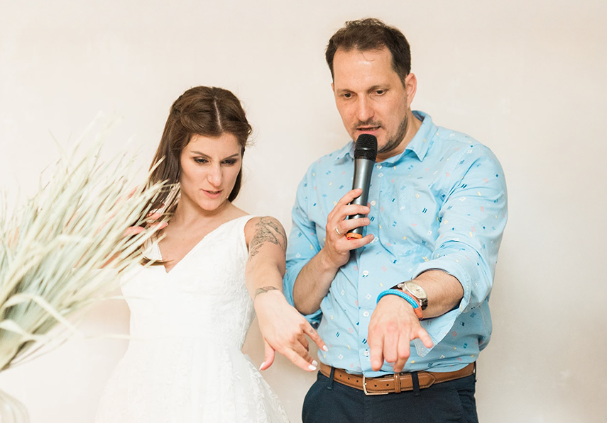
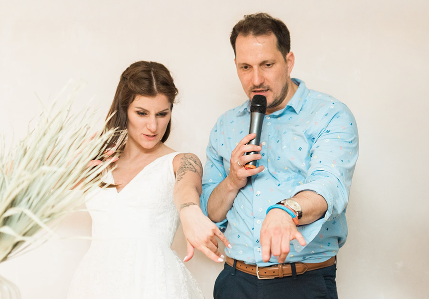

A jó ceremóniamester titka
Ceremóniamesterként az én feladatom a rendezvény zökkenőmentes lebonyolítása.
Azért felelek, hogy a vendégek jól érezzék magukat, minden és mindenki a helyén legyen, pontosan akkor, amikor arra szükség van.
Azért felelek, hogy a vendégek jól érezzék magukat, minden és mindenki a helyén legyen, pontosan akkor, amikor arra szükség van.
Már az első találkozás alkalmával arra törekszem, hogy az ifjú pár vagy a rendezvény szervezői érezzék: jó kezekben vannak. Hiszek abban, hogy a közvetlen, nyílt kommunikáció, az empátia és a biztos fellépés megteremti azt a légkört, amelyben a megbízóim nyugodtan hátradőlhetnek, tudva, hogy minden gördülékenyen zajlik, és a ceremóniamester ára busásan megtérül.
Minden részlet számít. Már a nagy nap előtt segítek a forgatókönyv összeállításában, az időbeosztás megtervezésében és az egyeztetések lebonyolításában.
Nem ragaszkodom sablonokhoz –alkalmazkodom, ha bármi közbejön. A cél: zökkenőmentes lebonyolítás, bármilyen helyzet is adódik.
A háttérből irányítom az eseményt, figyelek az időzítésre, összehangolom a szolgáltatókat, és azonnal kezelem a problémákat – hogy a vendégek csak élvezzék a pillanatot.
Egy ceremóniamester nem csupán egy szervező vagy konferanszié. Számomra az egyik legnagyobb öröm az, amikor látom, hogy a vendégek jól érzik magukat, nevetnek, felszabadultan ünnepelnek. Ehhez nemcsak jó humorérzék és kommunikációs készség kell, hanem az is, hogy mindig érezzem a közönség hangulatát, és ennek megfelelően vezessem az estét.
Sokan félnek az esküvői játékoktól, mert az emberek fejébe a régimódi “tojást teszünk a vőlegény nadrágjába” típusú, kicsit szexista, kicsit a női-férfi szerepek kifigurázásáról szóló játékok égtek be.
Valójában egész sor, letisztult, 5-10 perc terjedelmű, csattanós játék tudja színesíteni és emlékezetessé tenni a napot. Ezek egy része ráadásul az időt sem terheli, mert olyan játékokra/feladatokra is fel tudjuk kérni a násznépet, amit bármikor, szabadon, egyedül el tudnak végezni és önmagukat szórakoztatják vele, mint a hivatalos ivócimbora, de erről majd később…
Az évek során rengeteg eseményen vettem részt, és minden alkalommal tanultam valami újat. Nemcsak a rutin számít, hanem az is, hogy tudjam, milyen technikákkal lehet a figyelmet fenntartani, hogyan lehet a különböző típusú vendégeket bevonni az eseményekbe, és mikor van szükség gyors döntésekre. Mindebben tapasztalt partnerek támogatnak, legyen szó sminkesről, DJ-ről, cukrászról vagy fotósról.
Olcsót vagy drágát? Ismertet vagy ajánlottat? Mulatós vagy rockzene kell? Sok ilyen kérdésen keresztül haladva el tudunk jutni odáig, hogy a megfelelő szolgáltatót ajánljam nektek elfogadható áron.
A világ folyamatosan változik, és én is igyekszem lépést tartani vele. Új módszereket tanulok, fejlesztem a kommunikációmat, és rendszeresen képzem magam különböző területeken – legyen szó retorikáról, eseményszervezésről vagy akár pszichológiáról. Mindezt azért, hogy minden egyes rendezvényen a legjobb formámat nyújtsam.
Számomra a ceremóniamesterség nem csak munka, hanem szenvedély. Az a célom, hogy a Ti nagy napotok gördülékeny, elegáns és vidám legyen, és a résztvevők még sokáig emlegessék ezt az ünnepi eseményt.
Az esküvőtök életetek egyik legszebb és legfontosabb napja, és én azért vagyok itt, hogy minden részlete tökéletes legyen. A ceremóniamesterén kívül több szerepben is rendelkezésre állok.
Bármilyen módon is számítotok rám, a célom az, hogy az esküvőtök olyan legyen, amilyennek megálmodtátok – sőt, még annál is szebb!
Személyre szabott, megható és egyedi szertartást tartok, amely teljes mértékben rólatok szól – legyen szó meghitt vagy különleges ceremóniáról.
Támogatlak benneteket a tervezési folyamatban, segítek eligazodni a rengeteg döntés között, és biztosítom, hogy minden részlet összehangolt legyen.
Leveszem a vállatokról a teljes szervezés terhét, hogy ti csak az örömre és a nagy nap élvezetére koncentrálhassatok. A helyszínválasztástól a szolgáltatók koordinálásáig minden apróságra figyelek, hogy a napotok valóban gondtalan és felejthetetlen legyen.
Fontosnak tartom, hogy kialakuljon közöttünk a bizalom! Még a nagy esemény előtt, reális képet viszont csak személyes tapasztalatok útján szerezhettek rólam. Itt csak néhány mondat és fénykép vagyok, ezért arra kérlek Titeket, beszéljünk! Egy személyes találkozó alkalmával kiderülhet, hogy az elképzelésetek egyezik-e azzal, amit nyújtani tudok.